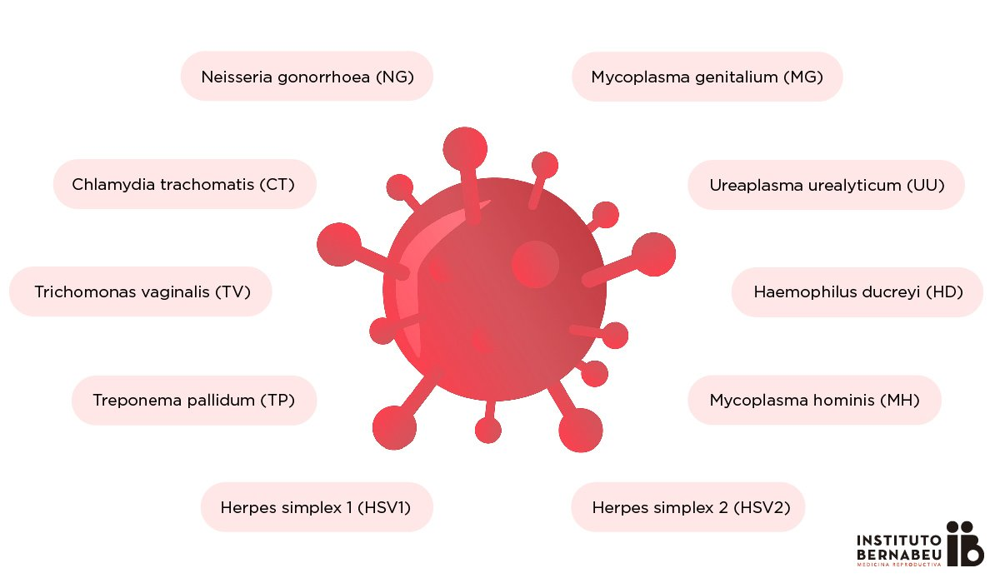
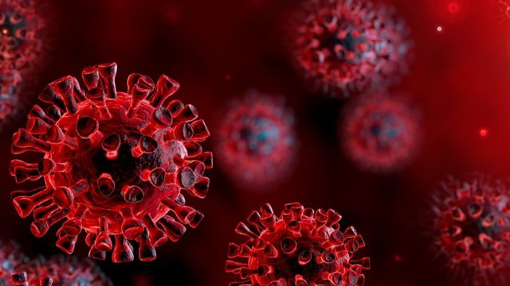

INFORMACION SOBRE EL TEMA
Bienvenido a la sección de información, aquí podrás hacer una retro alimentación del tema propuesto en el juego y además si deseas profundizar mas el tema, puedes aprender con la siguiente información:
¿QUE SON LAS ENFERMEDADES DE TRANSMISION SEXUAL, Y COMO LA INDUSTRIA FARMACEUTICA TRABAJA CON ELLAS? 
La industria farmacéutica se divide en 2, uno de estos son las enfermedades de transmisión sexual, donde buscan crear diversos medicamentos para pararlas o evitar su propagación, estos tipos de enfermedades se estudian a partir de 3 microorganismos: Bacterias (Organismos unicelulares que contribuyen a otras enfermedades globales importantes), Virus (es un agente infeccioso microscópico acelular que solo puede replicarse dentro de las células de otros organismos.) y Hongos (Los hongos causan enfermedades a los humanos de tres formas: por envenenamiento, por infecciones parasitarias y por reacciones alérgicas.) entre las enfermedades sexuales mas importantes por estos microorganismos encontramos las siguientes:
Tipos de Enfermedades de Transmisión Sexual por Bacterias
Sífilis: Se da por una bacteria llamada Treponema pallidum, es muy común en los jóvenes, es una enfermedad silenciosa, la vacuna del sífilis se da por un científico llamado Paul Ehrlich, el cual tenia en su laboratorio un cultivo de un hongo llamado penicillium, este por descuidado regó la bacteria del sífilis en el hongo, y observo como el hongo poco a poco se comía la bacteria, creo la vacuna, pero había un problema y era que el hongo era muy complejo y algunas personas eran alérgicas. El sífilis tiene un periodo de incubación de 4 meses, donde aparecen círculos o bolas rojas en las manos o en los pies, con ello se puede realizar una sereología, que consiste en una prueba que se encarga de comprobar si esta infectado y se mide por disoluciones, si esta contaminado se empieza un tratamiento de 3 semanas con ampolletas de penicilina aplicadas en el antebrazo y posteriormente se puede volver a realizar la sereología para saber si ya no esta infectado
HERPES TOPICO Y GENITAL: Los virus pueden provocar una de las enfermedades mas mortales, un virus necesita una célula para vivir, infectando la célula, y a partir de ahí atacando a las otras células, los virus están construidos con una capsida, que consiste en una estructura de proteínas que protege el código genético del virus. Entre los Virus tenemos el Herpes, dividido en el herpes tópico y genital. HERPES TOPICO: Se propaga a través de un utensilio contaminado, salen diversos granos, que provocan dolor de cabeza, debilitamiento y fiebre, yagas en la cabeza y caída de pelo, y se puede tratar con una crema aplicada en las yagas. HERPES GENITAL: Produce yagas en la boca, tiene un periodo de incubación de 2 a 4 meses, se propaga a través de las células, atacando al sistema inmunologico, para tratarlo se utiliza un antiretroviral que sirve para disminuir la velocidad de propagación, dando días, meses o años mas de vida.

SIDA: Este virus posee 2 capsidas por lo cual es muy difícil de crear una cura, tiene un periodo de incubación de 5 meses en adelante dependiendo de las personas, con ello las personas se someten a la prueba Elisa, que se encarga de determinar los anticuerpos (Cantidad de glóbulos blancos que atacan al virus), obteniendo 3 tipos de resultados que son positivo, negativo o 0 positivo que significa que no se pueden detectar los anticuerpos, existen medicamentos para tener relaciones sin un contagio mayor, junto a preservativos, normalmente se utilizan los preps, que es un antiretroviral que ayuda a que no se propague rápidamente.
